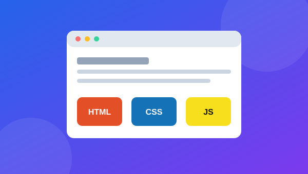
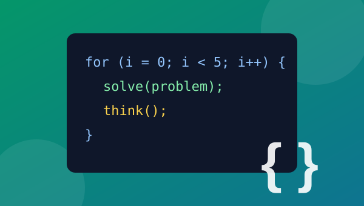

Latest Blogs
Explore our latest articles and learn something new.
1. Introduction to Web Development

Web development is the process of creating websites
and web applications.
The three important technologies used in front-end
web development are:
- HTML – Creates the structure.
- CSS – Styles the webpage.
- JavaScript – Adds interaction.
Learning these technologies provides a strong foundation
for students interested in web development.
Learn More
2. Why Learn Programming?

Programming teaches us how to solve problems using
logical and structured thinking.
- Improves problem-solving skills
- Develops logical thinking
- Helps automate tasks
- Creates career opportunities
Programming languages such as C, C++, Java and Python
are commonly used for learning programming concepts.
Back to Home
3. Technology in Education
Technology has become an important part of modern
education.
Students can use computers, mobile devices and online
resources to access educational material.
Technology makes learning more accessible
and provides students with different ways to understand
concepts.
Back to Home
4. Benefits of Learning HTML
HTML stands for HyperText Markup Language.
It is used to create the basic structure of a webpage.
HTML allows us to create:
- Headings
- Paragraphs
- Links
- Images
- Lists
- Tables
- Forms
HTML works together with CSS and JavaScript to create
complete web pages.
5. Learning CSS
CSS stands for Cascading Style Sheets.
It is used to control the appearance of HTML elements.
CSS can be used to change:
- Colors
- Fonts
- Spacing
- Backgrounds
- Layout
- Responsive design
Visit Home Page